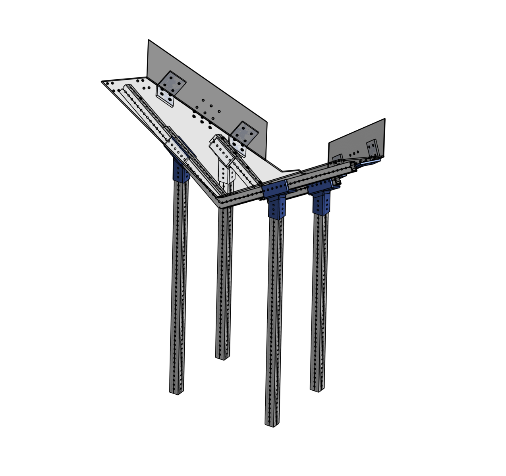

Project 06
Funnel Angle Mounts
- Problem
- Needed a way to mount 1x1 tubes at an angle for our funnel subsystem.
- Solution
- Made custom mounts that allow 1x1 tubes to be positioned at X, Y, and Z angles at the same time, while still handling the forces applied to the subsystem.
- Notes
- Used Onshape for this project.

Subsystem Context
The close-up shows the custom mounts, and the full assembly shows where they fit into the funnel.
